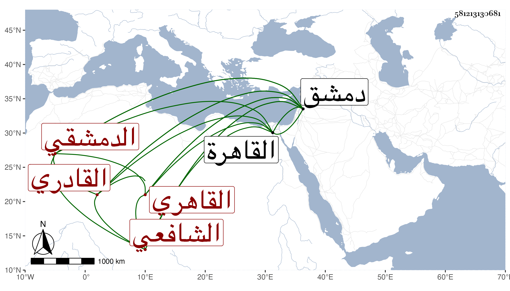

0902Sakhawi.DawLamic.ITO20230111-ara1.EIS1600.581213130681
Biography ID: 581213130681
132
عبد الله بن علي بن يوسف بن علي بن محمد بن البدر بن علي بن عثمان الجمال بن الإمام الرباني المجمع على ولايته النور أبي الحسن الدمشقي ثم القاهري الشافعي القادري الآتي أبوه ويعرف بابن أيوب وهو لقب لجده لكثرة بلاياه وربما ينسب له فيقال عبد الله بن علي بن أيوب . ولد بعد سنة اثنتين وثمانين وسبعمائة بدمشق ونشأ بها فحفظ القرآن واشتغل وبرع وقدم القاهرة فاستوطنها وخالط الزين عبد الباسط وغيره من الرؤساء واستقر في خدمة سعيد السعداء وكان إنسانا حسنا فاضلا ثقة رئيسا متواضعا كريما بارا بأصحابه عفيفا قانعا متجملا في ملبسه بهيا وقورا نير الشيبة طلقا بليغا في عبارته مقتدرا على إبراز الحكم في الكلام البديع العجيب دقيق الإشارة فكه المحاضرة مليح النادرة ظريفا حسن العشرة مشاركا في الفضائل تاركا الخوض فيما لا يعنيه شديد التخيل والانجماع راغبا في لقاء الله منشرح الصدر للموت كثير التقرير لذلك والناس في راحة منه يدا ولسانا قل أن ترى الأعين في مجموعه مثله ، وقد كتب على خطبة الحاوي كتابة حسنة ولكن بلغني أنه أوقف العلاء البخاري بدمشق عليها واستأذنه أيكمل أم يترك فنظر فيها ثم أشار بالترك ورأيت له رسالة سماها دواء النفس من النكس في الطب فرغ منها في ذي القعدة سنة خمس وثلاثين وثمانمائة وكتب له عليها طاهر ابن يونس الموصلي ما نصه :
| طالع فيه فاستفاد وكتب | داع لمولى انتقاه وانتخب |
| محبه طاهر بن يونس ال | موصلي مولدا ومنتسب |
| فوائدا جليلة من حقها | لو كتبت على الحرير بالذهب |
وكذا صنف غير ذلك مما قرض له ابن الهمام بعضه ، وكان يحكى لنا كثيرا من كرامات والده وشريف أحواله سيما تنفيره عن النظر في كلام ابن الفارض وابن عربي وخطه عليهما ، وكذا أخبرنا غير مرة أنه سمع صحيح البخاري على ابن صديق فسمع منه أصحابنا وحدث به غير مرة وسمعت منه بعضه وسألني عن بعض الأحاديث فكتبت له جوابا ووقع عنده موقعا وبالغ في الإتحاف والألطاف وهكذا كان دأبه بدون تكلف . مات فجأة في ربيع الآخر سنة ثمان وستين عن ست وثمانين سنة على ما أخبرني به قبل موته بيومين وصلى عليه في مشهد حافل ودفن بتربة سعيد السعداء وأثنى الناس عليه خيرا ونعم الرجل كان رحمه الله وإيانا .
